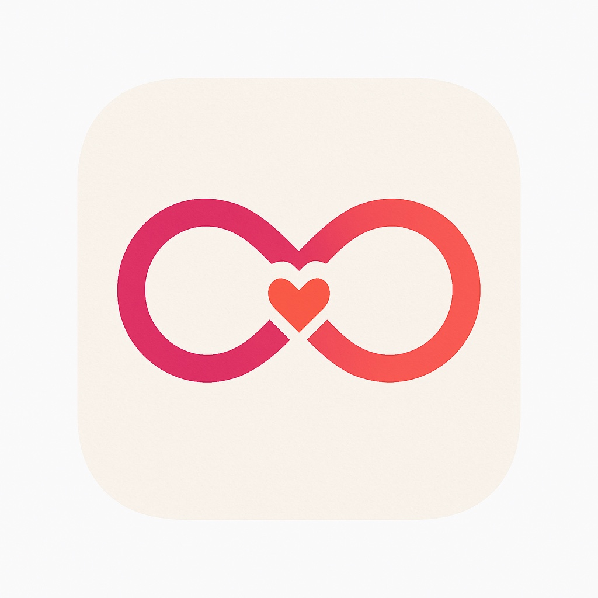

Choose the type of connection
Whether it is a new romantic spark, a missed opportunity, or a second chance, the app guides the user through a purpose-built experience.

Mutual Spark Get updatesMutual Spark is a privacy-first relationship app designed for people who want a more respectful, emotionally intelligent way to express interest, reconnect, and explore romantic possibility. Your interest stays private until it is mutual.


Mutual Spark is built for thoughtful people. It gives users a structured, respectful way to initiate, revisit, or deepen a connection while keeping dignity and privacy intact.
Whether it is a new romantic spark, a missed opportunity, or a second chance, the app guides the user through a purpose-built experience.
Users provide the small details that help the system match the right person while keeping disclosure limited.
The app is designed so that attraction, intent, and contact do not become public or uncomfortable unless both sides align.
Mutual Spark blends romantic warmth with structured matching logic, making the experience feel safer, more intentional, and more modern than cold outreach or uncertain social guessing.
Interest is not exposed prematurely. That reduces embarrassment and protects emotional comfort.
From asking someone out to reconnecting with an ex, the app supports real relationship scenarios.
Structured forms and matching logic help avoid ambiguity and reduce low-quality interactions.
Built around a calm, emotionally intelligent flow rather than speed-swiping and public exposure.
Mutual Spark sits at the intersection of dating, relationship recovery, privacy tech, and emotionally safer digital interaction.
Designed for a natural app experience with clean screens, guided input, and simple navigation.
The experience is designed to feel approachable and elegant while supporting meaningful, real-world relationship use cases.


Mutual Spark introduces a more nuanced model of digital relationship initiation — one that values discretion, timing, and emotional safety as much as connection itself.
A calmer, more respectful path to explore attraction.
A differentiated platform with unique matching mechanics and broad consumer storytelling potential.
A privacy-sensitive alternative to swipe-heavy interaction models.
Mutual Spark focuses on private interest signaling and mutual reveal. It is designed to reduce social discomfort while increasing intentionality.
The core experience is relationship-oriented, but the broader concept supports reconnection, missed opportunities, and nuanced interpersonal intent.
The platform is actively being refined. Join the early access list to hear about launch timing, testing opportunities, and app store availability.
Privacy is central to the product concept. The experience is designed around controlled disclosure rather than open exposure.
Get updates, early access news, and launch announcements for the app built around mutual connection.
No spam. Just launch news and meaningful updates.